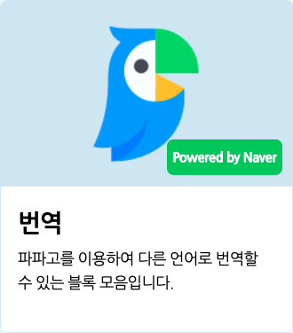

작품
- 시작하기
- 작품
화면의 구성 요소
- 상단 메뉴
- 실행 화면
- 보조 창
- 블록 탭
- 모양 탭
- 소리 탭
- 속성 탭
- 기타
블록
- 시작 블록
- 흐름 블록
- 움직임 블록
- 생김새 블록
- 붓 블록
- 글상자 블록
- 소리 블록
- 판단 블록
- 계산 블록
- 자료 블록
- 함수 블록
- 데이터 분석 블록
- 인공지능 블록 > 인공지능이란?
- 인공지능 블록 > AI 활용 - 번역
- 인공지능 블록 > AI 활용 - 읽어주기
- 인공지능 블록 > AI 활용 - 오디오 감지
- 인공지능 블록 > AI 활용 - 비디오 감지
- 인공지능 블록 > 모델 학습이란?
- 인공지능 블록 > 분류 모델 - 이미지
- 인공지능 블록 > 분류 모델 - 텍스트
- 인공지능 블록 > 분류 모델 - 음성
- 인공지능 블록 > 분류 모델 - 숫자
- 인공지능 블록 > 예측 모델 - 숫자
- 인공지능 블록 > 군집 모델 - 숫자
- 하드웨어 블록
- 확장 블록
인공지능 블록 > AI 활용 - 번역

‘네이버 랩스’가 자체 개발한 인공신경망 기반 번역 서비스 ‘파파고’를 활용해 언어를 번역하는 블록입니다.
- 인터넷에 연결되지 않았거나 인터넷 환경이 불안정할 경우, ‘알 수 없는 문장입니다.’를 가져오고 다음 블록으로 넘어갑니다.
- 내용은 3000 자까지 입력이 가능해요.
1. [한국어] (엔트리) 을(를) [영어] 로 번역하기
입력한 내용을 입력한 언어로 번역하는 값 블록입니다.
아무 내용도 입력하지 않으면 ‘문장이 없습니다’를 가져와요.
목록 상자( )를 클릭하면 번역할 언어를 선택할 수 있어요.
)를 클릭하면 번역할 언어를 선택할 수 있어요.
2. (엔트리) 의 언어
입력한 내용의 언어를 가져오는 값 블록입니다.
언어를 알 수 없다면 ‘알 수 없는 문장입니다.’를 가져와요.
Caught a mistake or want to contribute to the documentation?
Edit this page on Github!